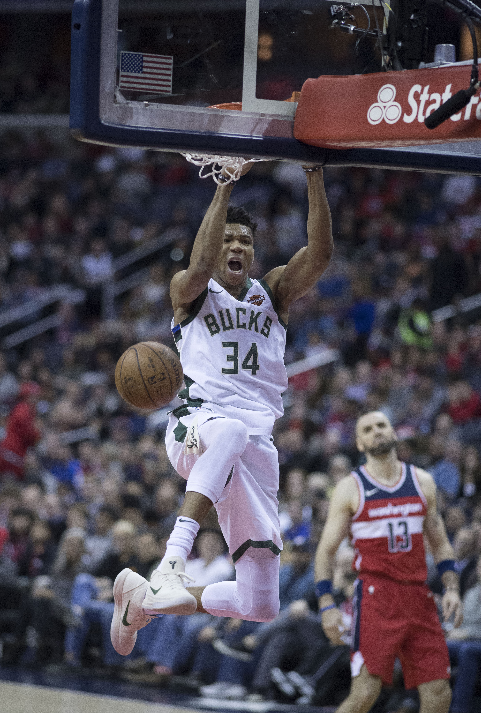

A saída de Giannis Antetokounmpo do Milwaukee Bucks representa o fim de uma das relações mais marcantes da NBA moderna. Escolhido apenas na 15ª posição do Draft de 2013, o então jovem grego chegou aos Estados Unidos cercado por dúvidas, desenvolveu-se dentro da franquia e terminou sua trajetória em Wisconsin como campeão, duas vezes MVP e maior jogador da história dos Bucks.
Giannis foi oficialmente negociado com o Miami Heat em uma troca de grandes proporções. Além do astro, Miami recebeu Bobby Portis, outro integrante importante do elenco campeão de 2021. Milwaukee, por sua vez, iniciou um processo de reconstrução ao receber quatro jogadores, três escolhas de primeira rodada do draft, uma troca de escolhas e uma seleção de segunda rodada.
O negócio encerrou meses de especulação sobre o futuro de Antetokounmpo e colocou o Heat novamente no centro do mercado da NBA. Para Miami, a contratação significa a chegada de uma superestrela capaz de transformar o nível competitivo da equipe. Para os Bucks, representa a difícil decisão de abrir mão do principal responsável pelo período mais vitorioso da franquia em cinco décadas.
O acordo envolveu jogadores prontos para atuar, jovens em desenvolvimento e escolhas futuras de Draft.
O Miami Heat recebeu:
- Giannis Antetokounmpo
- Bobby Portis
O Milwaukee Bucks recebeu:
- Tyler Herro
- Jaime Jaquez Jr.
- Kel’el Ware
- Kasparas Jakučionis
- a 13ª escolha do Draft de 2026, utilizada em Nate Ament;
- uma escolha de primeira rodada em 2031;
- uma escolha de primeira rodada em 2033;
- o direito de trocar escolhas de primeira rodada em 2030;
- uma escolha de segunda rodada em 2033.
A quantidade de ativos entregues por Miami demonstra o valor de Giannis no mercado. O Heat abriu mão de Tyler Herro, um de seus principais pontuadores, além de jovens valorizados e parte relevante de seu futuro no Draft. Milwaukee aceitou o pacote por entender que precisava recuperar flexibilidade e iniciar uma nova construção esportiva.
A saída de Antetokounmpo não aconteceu por causa de uma única derrota ou de um conflito isolado. O rompimento foi consequência do desgaste esportivo acumulado depois do título de 2021.
Os Bucks continuaram competitivos e realizaram movimentos agressivos para manter uma equipe capaz de disputar o campeonato. A direção investiu escolhas de Draft, contratos elevados e jogadores importantes na tentativa de montar diferentes elencos ao redor de Giannis. A chegada de Damian Lillard foi o maior exemplo dessa estratégia, mas não resultou em uma nova participação nas Finais.
Ao mesmo tempo, lesões, mudanças de treinador e eliminações precoces nos playoffs reduziram a confiança na continuidade do projeto. O cenário tornou-se ainda mais delicado na temporada 2025/26. Giannis disputou apenas 36 partidas por causa de problemas físicos, enquanto os Bucks ficaram fora dos playoffs e interromperam uma sequência de nove classificações consecutivas.
Milwaukee chegou a um ponto no qual manter sua estrela significava continuar tentando competir com poucas possibilidades de renovar o elenco. A troca permitiu que a franquia recuperasse jogadores jovens e escolhas futuras. Para Giannis, a mudança representou a oportunidade de buscar novos títulos sem atravessar os primeiros anos de uma reconstrução.
A campanha ruim dos Bucks não significou que Antetokounmpo tivesse deixado de ser dominante. Mesmo limitado fisicamente durante sua última temporada em Milwaukee, ele registrou média de 27,6 pontos e permaneceu como a principal referência ofensiva da equipe.
Seu impacto também aparecia além da pontuação. Na temporada 2025/26, os Bucks tiveram um saldo 14,1 pontos melhor a cada 100 posses quando Giannis estava em quadra. Foi a maior diferença desse tipo em uma temporada de sua carreira, sinal de que o desempenho coletivo da equipe ainda dependia diretamente de sua presença.
Embora o aproveitamento de longa distância nunca tenha sido seu ponto forte, o grego compensa com eficiência perto da cesta, capacidade de sofrer faltas e versatilidade defensiva. Ao longo da carreira, tornou-se capaz de proteger o aro, trocar marcações e defender jogadores de diferentes posições.
O título que definiu a passagem pelos Bucks
Giannis já havia conquistado dois prêmios de MVP antes de chegar às Finais, mas foi o título da NBA de 2021 que transformou definitivamente seu legado.
Milwaukee enfrentou o Phoenix Suns e perdeu os dois primeiros jogos da decisão. Pressionados, os Bucks reagiram com quatro vitórias consecutivas e fecharam a série em 4 a 2.
A atuação de Antetokounmpo no sexto jogo entrou para a história da liga. Ele marcou 50 pontos, pegou 14 rebotes e deu cinco bloqueios na vitória por 105 a 98. O resultado entregou a Milwaukee o primeiro campeonato desde 1971 e encerrou um jejum de 50 anos.
Giannis recebeu o prêmio de MVP das Finais e eliminou as dúvidas sobre sua capacidade de liderar um time campeão. Mais do que conquistar uma taça, ele colocou seu nome ao lado das maiores figuras da história dos Bucks.
Ele deixou Milwaukee com 21.531 pontos na temporada regular e como líder da franquia em diversas categorias históricas. O grego também acumulou dois prêmios de MVP, o troféu de Jogador Defensivo do Ano, o MVP das Finais e dez participações no All-Star Game.
Sua influência, porém, não pode ser medida apenas por estatísticas. Giannis mudou a posição dos Bucks dentro da NBA. Antes de sua ascensão, Milwaukee passava longos períodos distante das principais decisões. Com ele, a equipe virou presença constante nos playoffs e passou a iniciar temporadas entre as candidatas ao título.
O jogador também se tornou o rosto internacional da franquia. Sua história, marcada pela infância difícil na Grécia e pela evolução de uma aposta física para um dos atletas mais dominantes da liga, ampliou o alcance global dos Bucks.
Mesmo depois da troca, sua ligação com Milwaukee continuará sendo permanente. O camisa 34 saiu como campeão, recordista e símbolo de uma geração. Sua camisa tornou-se uma candidata natural a ser aposentada no futuro, enquanto sua trajetória permanecerá como referência para todos os jogadores que vestirem o uniforme da franquia.
Agora a franquia inicia uma reconstrução sem a garantia de encontrar rapidamente outro jogador capaz de ocupar o espaço deixado por Giannis.
Tyler Herro chega como o nome mais consolidado do pacote. O armador oferece pontuação, criação e arremessos de longa distância. Jaime Jaquez Jr. e Kel’el Ware acrescentam juventude e experiência, enquanto Kasparas Jakučionis e Nate Ament representam apostas de desenvolvimento.
As escolhas de Draft também serão fundamentais. Depois de comprometer vários ativos na tentativa de manter um elenco competitivo ao redor de Giannis, os Bucks voltam a ter recursos para realizar trocas ou selecionar novos talentos.
O maior desafio será construir uma identidade diferente. Durante mais de uma década, o ataque, a defesa, a montagem do elenco e a imagem comercial do clube estiveram ligados a Antetokounmpo. Sua saída obriga Milwaukee a redefinir prioridades e aceitar que o retorno às grandes decisões poderá exigir paciência.
O desafio no Miami Heat
Giannis, aos 31 anos, chega a uma organização conhecida por sua cultura competitiva e por buscar grandes estrelas. O Miami já realizou movimentos semelhantes ao contratar Shaquille O’Neal em 2004 e ao reunir LeBron James, Dwyane Wade e Chris Bosh em 2010.
As duas operações resultaram em títulos. Shaquille ajudou Miami a conquistar a NBA em 2006, enquanto o trio liderado por LeBron venceu em 2012 e 2013.
Antetokounmpo assume agora a função de principal estrela de um novo projeto. A expectativa é que sua capacidade de atacar o aro, defender múltiplas posições e acelerar o jogo amplie as possibilidades táticas da equipe comandada por Erik Spoelstra.
O sucesso dependerá da saúde do grego e da capacidade do Heat de equilibrar o elenco depois de abrir mão de jogadores importantes. Miami precisará oferecer espaçamento, arremessadores e criação ao redor do grego para aproveitar sua força dentro do garrafão.
A pressão pelo título também será imediata. O Heat não investiu tantos jogadores e escolhas para realizar uma transição lenta. A chegada do astro transforma a equipe em uma candidata relevante no Leste e cria a obrigação de competir pelas Finais enquanto Giannis ainda está em alto nível.
O jejum de 13 anos sem título
A contratação de Giannis também ganha peso porque o Miami Heat não conquista a NBA desde 2013. Naquela temporada, o time liderado por LeBron James, Dwyane Wade e Chris Bosh venceu o San Antonio Spurs por 4 a 3 nas Finais. O sétimo jogo terminou com vitória de Miami por 95 a 88, e LeBron foi eleito o MVP da decisão.
Desde então, o Heat voltou às Finais em três oportunidades. Foi derrotado pelo próprio San Antonio Spurs em 2014, pelo Los Angeles Lakers em 2020 e pelo Denver Nuggets em 2023.
A movimentação acontece em um momento de transformação na Conferência Leste. Além da chegada de Antetokounmpo a Miami, outras estrelas mudaram de equipe, como mostra a troca de Jaylen Brown dos Celtics para os Sixers envolvendo Paul George. As negociações alteraram o equilíbrio entre os principais candidatos e aumentaram a pressão sobre as franquias que investiram alto na busca pelo título.
Para o Heat, Giannis representa mais do que uma contratação de impacto. Ele é a principal tentativa da organização de encerrar o maior jejum de títulos de sua história desde a primeira conquista, em 2006.
O grego deixou Milwaukee depois de entregar aos Bucks um campeonato que parecia distante. Em Miami, recebe uma missão semelhante: transformar um time acostumado a competir em uma equipe capaz de voltar ao topo da NBA.